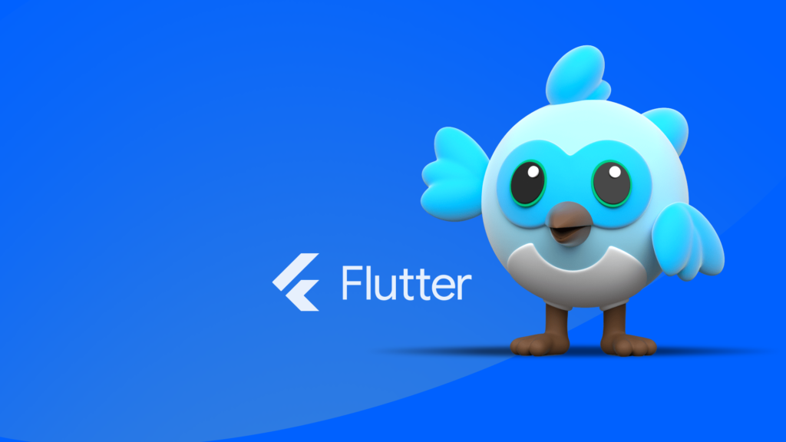

Кратко о Flutter
История создания
Flutter — комплект средств разработки и фреймворк с открытым исходным кодом для создания мобильных приложений под Android и iOS, веб-приложений, а также настольных приложений под Windows, macOS и Linux с использованием языка программирования Dart, разработанный и развиваемый корпорацией Google. Основные составляющие комплекта — платформа Dart, движок Flutter, библиотека Foundation, наборы виджетов и средства разработки (Flutter DevTools). Основная заявленная особенность — высокая графическая производительность (возможность отображения 120 кадров в секунду). Движок Flutter написан преимущественно на C++, поддерживает низкоуровневый рендеринг с помощью графической библиотеки Google Skia, имеет возможность взаимодействовать с платформозависимыми SDK под Android и iOS. Библиотека Foundation, написанная на языке Dart, содержит основные классы и методы для создания приложений Flutter и взаимодействия с движком Flutter. Дизайн пользовательского интерфейса приложений Flutter предполагает использование виджетов, описываемых как неизменяемые объекты какой-либо части пользовательского интерфейса. Все графические объекты, включая текст, формы и анимацию, создаются с помощью виджетов; комбинированием простых виджетов создаются сложные виджеты. С фреймворком поставляется два основных набора виджетов — Material Design (стиль Google) и Cupertino (стиль Apple). При этом создавать приложения Flutter можно и без виджетов, напрямую вызывая методы библиотеки Foundation для работы с канвой. Из-за ограничений на динамическое выполнение кода в App Store, под iOS Flutter использует AOT-компиляцию. Широко используется такая возможность платформы Dart, как «горячая перезагрузка», когда изменение исходного кода применяется сразу в работающем приложении без необходимости его перезапуска. Первая версия выпущена в 2015 году под названием «Sky» и работала только для Android-приложений. Полная поддержка создания веб-приложений появилась в версии Flutter 2.0 (март 2021 года), с этой же версии реализована поддержка создания настольных приложений для Windows, macOS и Linux и Google Fuchsia (в виртуальной машине Dart с JIT-компилятором). 12 мая 2022 года состоялся релиз Flutter 3 и Dart 2.17 со стабильной поддержкой всех десктопных платформ. 27 октября 2024 года сообщество разработчиков анонсировало форк Flock. Инициатором форка стал Мэтт Кэрролл, бывший сотрудник Google, ранее входивший в команду разработчиков Flutter. В качестве причины создания форка называется недостаточный объём ресурсов, которые компания Google вкладывает в проект.
Первые версии и официальный релиз
В мае 2017 года на конференции Google I/O была представлена первая альфа-версия Flutter. Уже тогда стало понятно, что этот фреймворк предлагает совершенно новый подход к кроссплатформенной разработке. В отличие от других решений, Flutter не использует нативные компоненты операционных систем, а вместо этого рисует интерфейс самостоятельно, используя движок Skia.
Ключевые вехи развития
4 декабря 2018 года состоялся официальный релиз Flutter 1.0. Это была стабильная версия, готовая для production-разработки. С этого момента началось стремительное развитие экосистемы...
Архитектура и особенности
Flutter использует язык программирования Dart, также разработанный Google. Dart был выбран благодаря своей производительности, возможности AOT-компиляции и поддержке "горячей перезагрузки", что значительно ускоряет процесс разработки. Архитектура Flutter построена вокруг концепции виджетов - всё является виджетом, от структурных элементов до стилей и анимаций.

Применение Flutter для веб-разработки

С выходом Flutter 2.0 в марте 2021 года фреймворк получил полноценную поддержку веб-разработки. Flutter for Web позволяет компилировать Dart код в JavaScript, что даёт возможность запускать Flutter-приложения в браузере. Это открывает новые возможности для создания прогрессивных веб-приложений с нативным пользовательским опытом.
Преимущества Flutter для веба
Одним из ключевых преимуществ использования Flutter для веб-разработки является единая кодовая база для всех платформ. Разработчики могут использовать один и тот же код для мобильных, веб- и десктопных версий приложения. Это значительно сокращает время разработки и упрощает поддержку...
Будущее Flutter
Google продолжает активно инвестировать в развитие Flutter. В планах - улучшение производительности, расширение возможностей для веб-разработки и поддержка новых платформ. Сообщество разработчиков растёт с каждым днём, что свидетельствует о bright future этого фреймворка.
